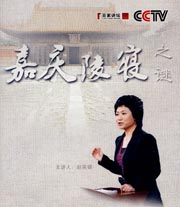

百家讲坛全集
>
百家讲坛2009
>
百家讲坛 嘉庆陵寝

名称：
集数：
播出时间：
百家讲坛 嘉庆陵寝
2
2009年03月23日
嘉庆皇帝是清朝入关之后的第五代皇帝，姓名为爱新觉罗 永琰。生于公元1760年，卒于公元1820年。他三十七岁即位，在位二十五年，享年六十一岁。庙号仁宗，谥号睿皇帝。与父亲乾隆帝相比，嘉庆帝是一位既没有政治胆略，又缺乏革新精神；既没有理政才能，又缺乏果敢作为的平庸天子。而嘉庆帝的时代，正是大清王朝由康雍乾盛世走向衰落的时期，因此，嘉庆帝本人被历史性地赋予了大清帝国由极盛转为衰败的悲剧命运。
分集介绍
《百家讲坛》 嘉庆陵寝 （一） 嘉庆陵寝修建之谜
播出时间：
主讲人：
介绍：
2009年03月23日
喻大华
公元1820年，清朝嘉庆皇帝逝世后，葬于河北易县的清西陵昌陵，昌陵的位置在嘉庆的父亲乾隆生前即亲自指定。但是乾隆皇帝自己却葬在距此有数百里之遥，位于河北遵化的清东陵。乾隆皇帝为何要让儿子远离自己，在西陵内伴随他的祖父雍正皇帝。清朝产生皇帝分葬制度，而且清西陵葬有四位皇帝，而清东陵却葬有六位皇帝。本期节目邀请清东陵文物管理处副主任赵英健，为您揭开清朝嘉庆皇帝陵寝的修建之谜。
《百家讲坛》 嘉庆陵寝 （二） 嘉庆陵寝大案
播出时间：
主讲人：
介绍：
2009年03月24日
喻大华
本期节目由清东陵文物管理处副主任赵英健介绍了发生在嘉庆陵寝的贪污大案。嘉庆四年，��布被召回京城，嘉庆帝又选择了孝淑睿皇后的亲哥哥，也就是嘉庆帝的大舅子盛住担任此职。可是让嘉庆帝怎么也意想不到的是，正是由于他这个大舅子盛住的参与，却引出一系列空前的陵寝工程贪污大案。